Surya（@kickingkeys）说 Claude Fable 5.2 很会画画，并向 Anthropic 的 Claude 团队道贺。视频和声音，据他说，都是用代码做的。下面是同一组提示下，Fable 5.2、Fable 5.1 与 Gemini 4 Argon 的对照。主帖附了一段约 23 秒、1080×1080 的视频；本页只用封面静帧，没有下载，也没有观看。作者随后用十组绘画对照和一张汇总表，谈高光与材质、每幅画的费用，以及思考所花的时间。有人问他给这些生成准备了什么工具包，他只答：p5.js 库。
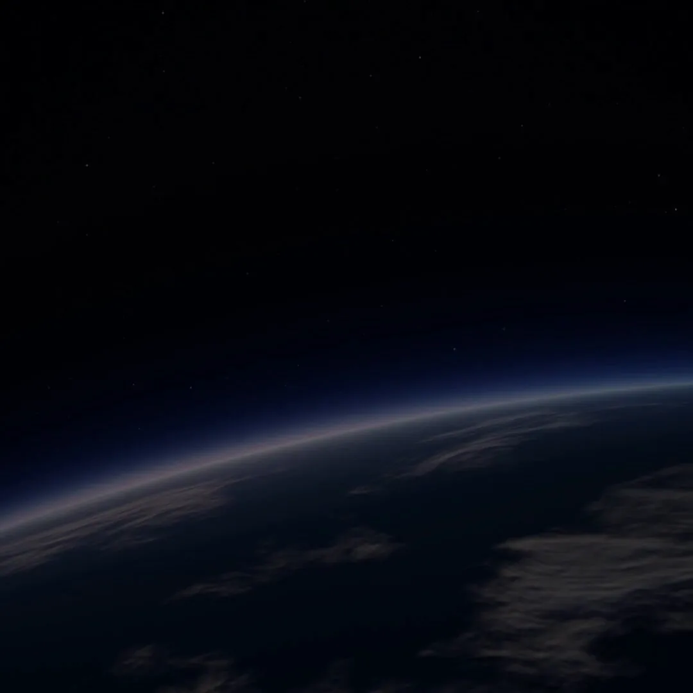
这是一次什么对照
就作者自己的说法，这不是一次图像生成模型的评测，而是让语言模型写代码来画画。工具包他只点名了 p5.js。视频和声音也声称是代码做成的。这些都是自报：本页没有源码，也没有演示页，无法核对这些画是否真由 p5.js 绘出，更不能核对话音是怎样生成的。⚠️
对照本身排列得清楚。每一组都是同一提示下的三张结果，左上为 Claude Fable 5.2，右上为 Claude Fable 5.1，下方为 Gemini 4 Argon；每张图下都标着美元费用和耗时。作者认为 Fable 5.2 是他试过的最好的画家，高光用得好，材质也更真实；但虽然它的单价比 Fable 5.1 更低，每幅画却大约要用掉三倍的 token，其中大多是思考，所以更贵，也不适合当作人人都能用的日常模型。费用、耗时和 token 数都写在他发布的图上，本页只作转写，没有独立复现。⚠️
原帖全文
以下为作者英文推文串的中文译文。原帖不是 X 长文。主帖之后还有五条作者自己的续帖，发布间隔约一到四秒，同属一条对话。
Fable 5.2 很会画画！！🎨 恭喜 @claudeai 团队！（视频和声音都是用代码做的。）
下面是 Fable 5.2、Fable 5.1 和 Gemini 4 Argon 在同一组提示下的对照。⬇️
作者：Surya @kickingkeys；发布：2026-11-10 08:10（新加坡时间，UTC+8）。主帖附视频，点击观看。
Fable 5.2 很会用高光，也能让材质显得真实。
看看光线怎样穿过玻璃弹珠、又怎样在阴影里汇成一洼。Fable 5.2 画的老虎有分量。它的条纹还会顺着身体的起伏弯曲。
虽然 Fable 5.2 的单价比 Fable 5.1 更低，但它大约会用掉三倍的 token，其中大多是思考，所以每幅画反而更贵。
Fable 5.2 会按提示调节用力的程度。那头麋鹿用了大约 5 万 token 的思考和代码，大约是 Fable 5.1 的四倍。滑板那张把它推到了大约 9 万。
这些思考都要花时间。糖纸那张不到 5 分钟，斑马群却用了 16 分半。Fable 5.1 大约 5 分钟，Argon 不到 2 分钟。
查看这条续帖。结合图下标签可以读出：这里的「16 分半」「大约 5 分钟」「不到 2 分钟」说的是斑马群，分别对应 Fable 5.2 的 16 分 37 秒、Fable 5.1 的 4 分 50 秒，以及 Argon 的 1 分 48 秒；糖纸那张 Fable 5.2 标为 4 分 49 秒，也与「不到 5 分钟」相符。
Fable 5.2 是一位出色的画家，是我试过的最好的。
但它非常贵，大概不适合每个人天天用。如果你真的想攻一个卡住很久的难题，我会建议用它。
英文原文
Fable 5.2 is very good at painting!! 🎨 Congratulations to the @claudeai team!(Video + Audio made in code).
Comparison below between Fable 5.2, Fable 5.1 and Gemini 4 Argon on the same prompts. ⬇️
Fable 5.2 uses highlights well and is able to make materials feel realistic.
See how the light bends through the glass marbles and the light pools in the shadows. Fable 5.2's tiger painting has real weight. Its stripes even curve to follow the contours of the tigers body.
While Fable 5.2 is cheaper per token than Fable 5.1, it ends up using about 3x more tokens, most of them thinking, so each painting costs more.
Fable 5.2 matches its effort to the prompt. The elk took it ~50k tokens of thinking and code, about ~4x what Fable 5.1 used. The skater pushed it to ~90k.
All that thinking takes time. The candy wrapper took under 5 minutes but the zebra herd took 16½ minutes. Fable 5.1 took about 5, and Argon under 2.
Fable 5.2 is a fantastic painter, the best I've tested.
But it's very expensive and probably not something everyone can use as a daily driver. If you really want to push on a hard problem you've been stuck on, I'd recommend using it.
对照图
以下十组对照和图上的费用、耗时标签，均来自作者自己的续帖。本页把这些图转成较小的 webp，仅供对照阅读；完整原图请到原帖查看。滑板那一组画的是虚构的滑板人物，是插画，不是真人照片。图下数字均为作者标注，⚠️ 未独立核实。
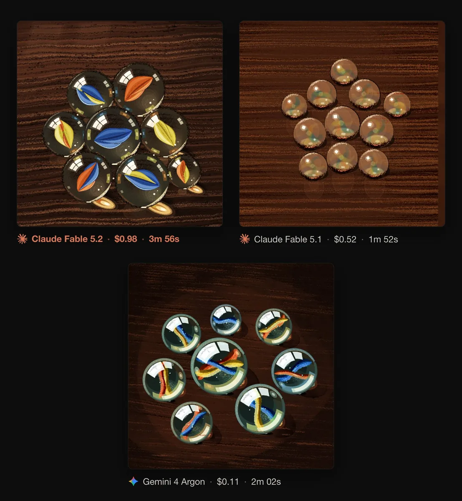
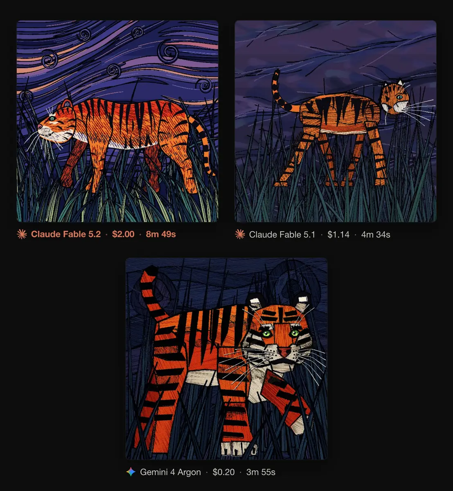
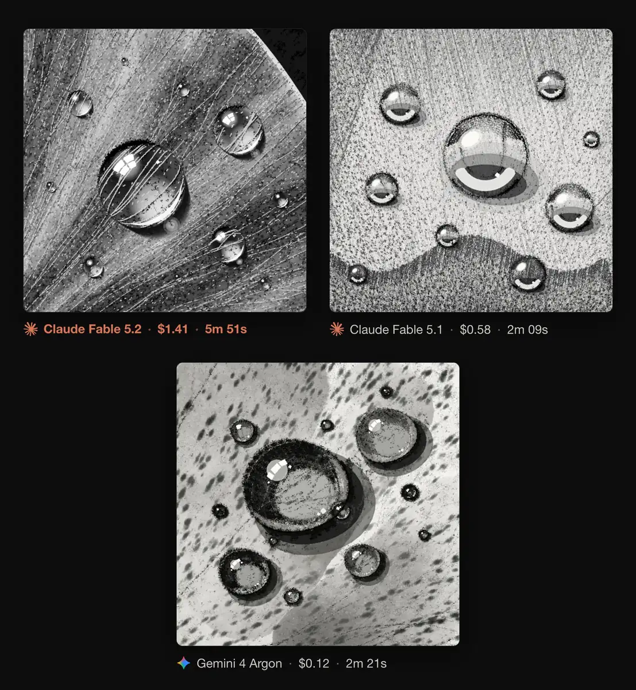
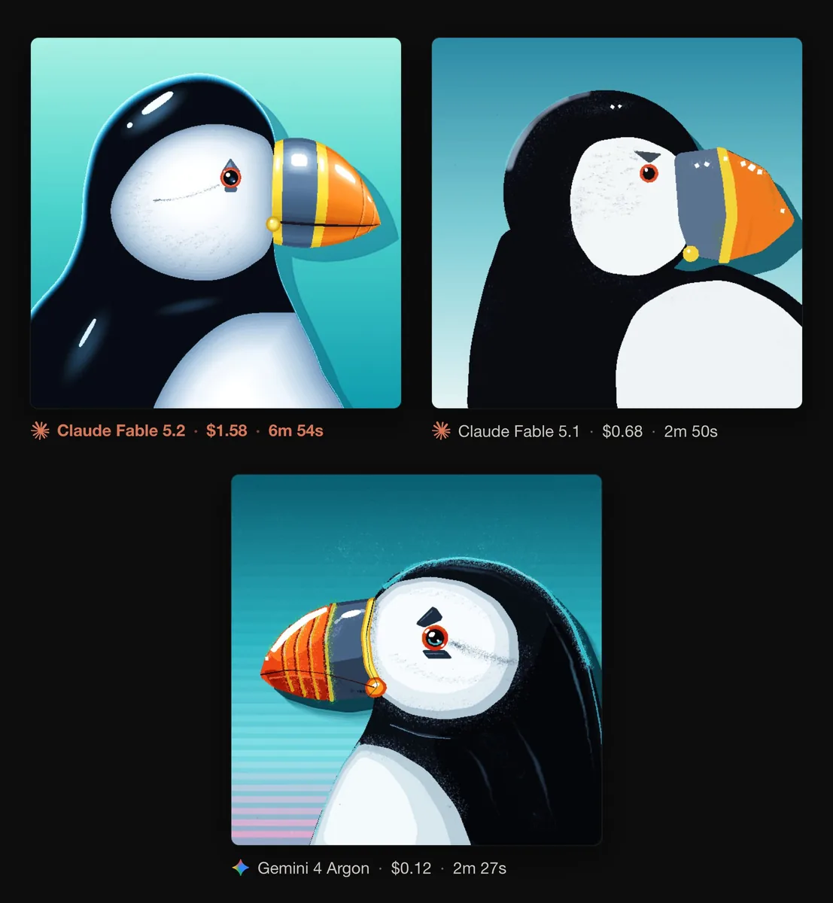
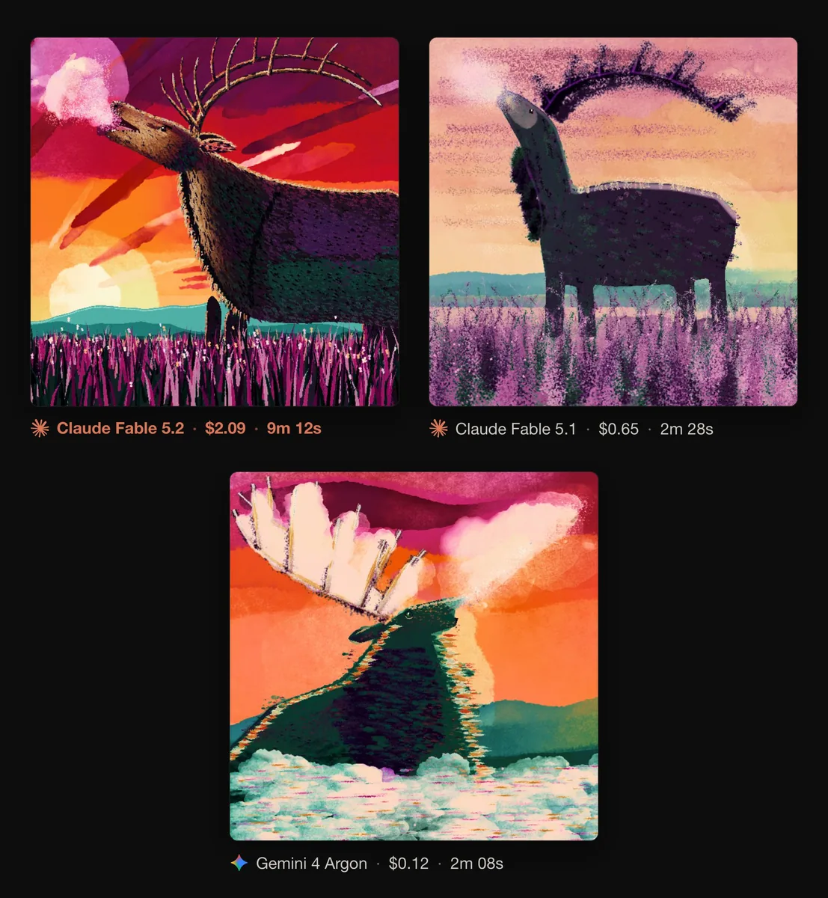
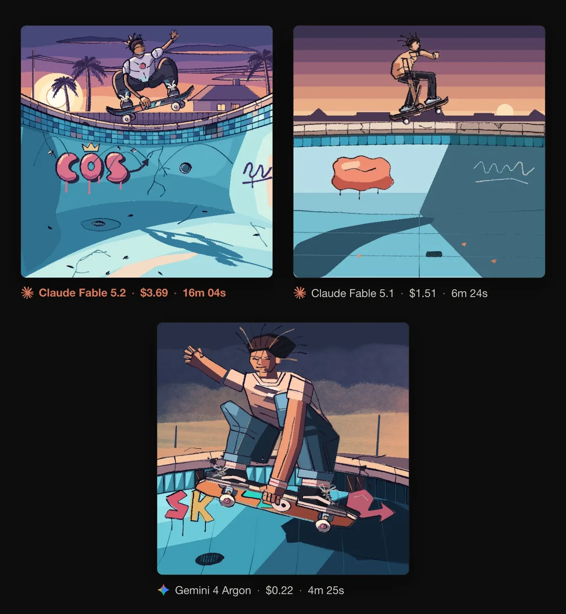
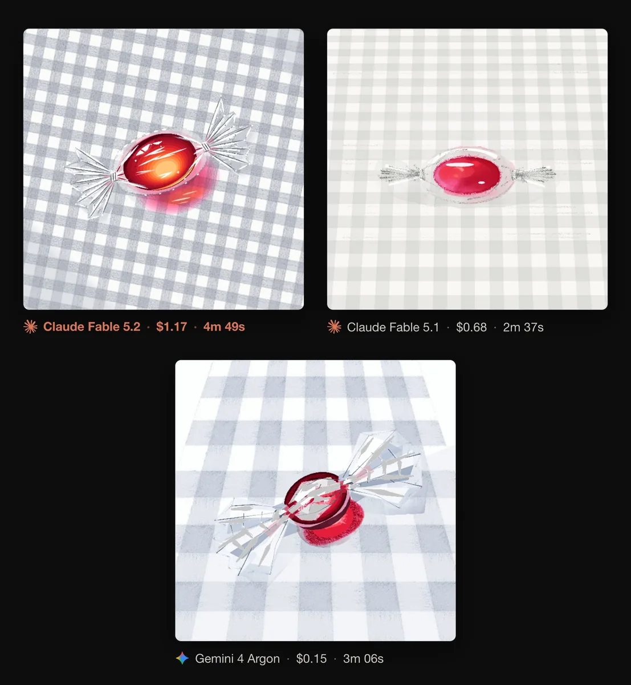
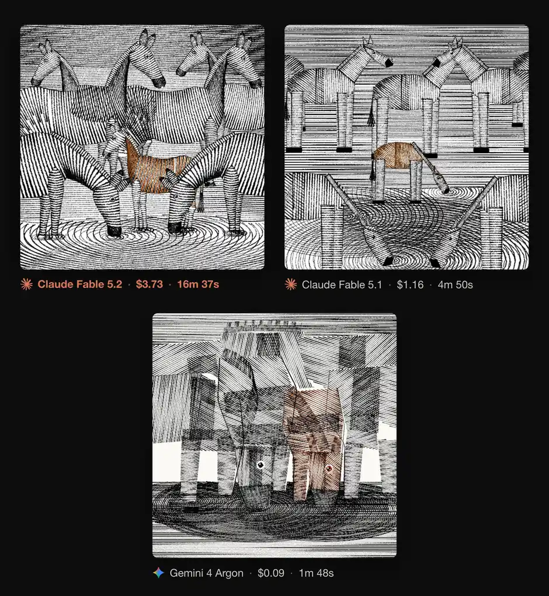
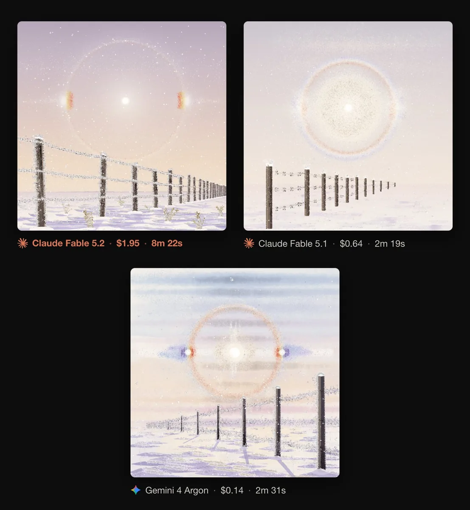
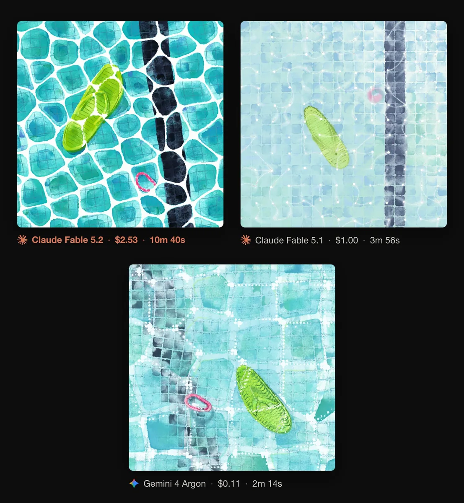
汇总表里的数字
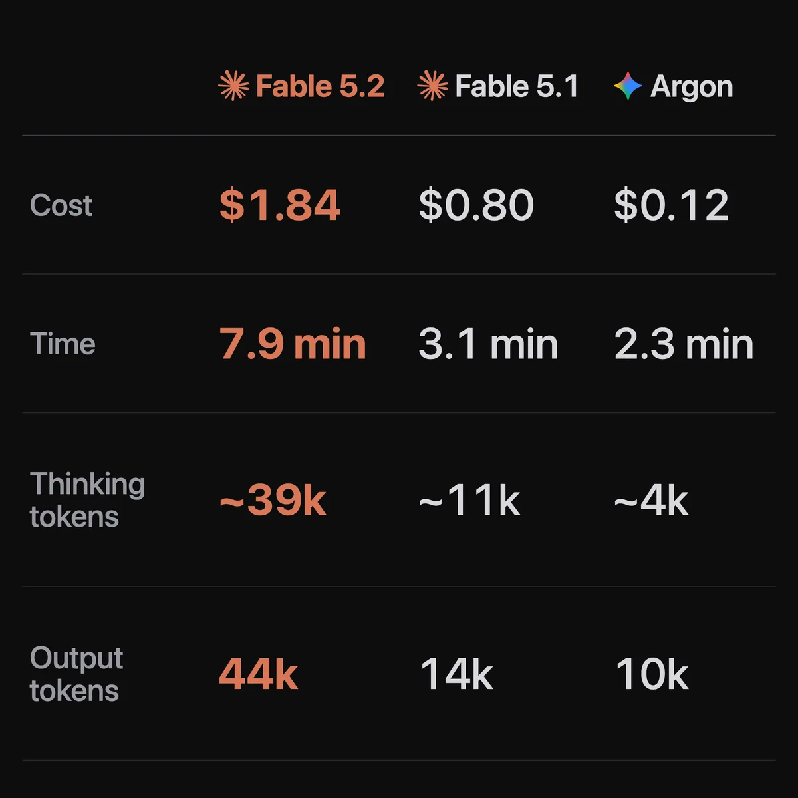
把十组图下的标签转写如下，便于对照。单位是作者图上的美元与分秒，不是本页的测量。
| 题目（据画面） | Fable 5.2 | Fable 5.1 | Argon |
|---|---|---|---|
| 玻璃弹珠 | 0.98 美元 · 3 分 56 秒 | 0.52 美元 · 1 分 52 秒 | 0.11 美元 · 2 分 02 秒 |
| 老虎 | 2.00 美元 · 8 分 49 秒 | 1.14 美元 · 4 分 34 秒 | 0.20 美元 · 3 分 55 秒 |
| 水珠 | 1.41 美元 · 5 分 51 秒 | 0.58 美元 · 2 分 09 秒 | 0.12 美元 · 2 分 21 秒 |
| 海鹦鹉 | 1.58 美元 · 6 分 54 秒 | 0.68 美元 · 2 分 50 秒 | 0.12 美元 · 2 分 27 秒 |
| 麋鹿 | 2.09 美元 · 9 分 12 秒 | 0.65 美元 · 2 分 28 秒 | 0.12 美元 · 2 分 08 秒 |
| 滑板 | 3.69 美元 · 16 分 04 秒 | 1.51 美元 · 6 分 24 秒 | 0.22 美元 · 4 分 25 秒 |
| 糖纸 | 1.17 美元 · 4 分 49 秒 | 0.68 美元 · 2 分 37 秒 | 0.15 美元 · 3 分 06 秒 |
| 斑马群 | 3.73 美元 · 16 分 37 秒 | 1.16 美元 · 4 分 50 秒 | 0.09 美元 · 1 分 48 秒 |
| 雪地日晕 | 1.95 美元 · 8 分 22 秒 | 0.64 美元 · 2 分 19 秒 | 0.14 美元 · 2 分 31 秒 |
| 泳池拖鞋 | 2.53 美元 · 10 分 40 秒 | 1.00 美元 · 3 分 56 秒 | 0.11 美元 · 2 分 14 秒 |
线程里还能看到什么
有人问「你为这些生成提供了什么工具包？」作者答：「p5.js 库！」另有人看完费用后续帖，说自己明天要把 token 花破产，作者回：「它太贵了 😭」。还有人说地平线那张看起来非常真实，作者回：「这是一个了不起的模型。」对「这才是唯一重要的评测」这条评论，他写：「直到下一个来临 👀」。被称赞这组探索有趣时，他对一位朋友说：「语言模型就是新的图像 / 视频模型 😎」。
评论区里另有人提到，森林里那条蜿蜒的线给地平线镜头带来了纵深。这是他人看过视频后的观察。本页只看到封面帧里的地球与大气，没有观看视频，不能确认那段森林镜头。也有人问声音是不是也由代码生成、究竟是什么在把代码变成音乐；到本页核对时，作者没有在可检索的回复里再作说明。
许可与可复现性
作者没有在帖中给出仓库、Gist 或演示页，也没有声明许可证。对照图本身是他发布的评测截图，本页只为说明这条推文串而缩小转载，并链回原帖。视频和声音没有重新托管。按版权分级，这是作者本人的英文短帖串，本页做导读，并收录全文中译与原文；不把尚未公开的源码写成已经核过的实现，也不把图上的费用写成已经复核的账单。
传播数据（快照）
2026-11-10 经 X 接口读取时，主帖约 4,567 次浏览、112 个赞、7 次转发、10 条回复、44 次收藏，引用为 0。这些数字会变，只作当时记录，不是效果评测。
核实边界与署名
- 这是以该对照为中心的导读，并收录作者本人英文推文串的全文中译。未见可打开的源码或演示，本页不转载视频。
- 「视频和声音都是用代码做的」「工具包是 p5.js」「Fable 5.2 是我试过的最好的画家」均为作者自报，⚠️ 未用源码或盲测核对。
- 图上的费用、耗时、思考与输出 token，以及「单价更低但每幅更贵」「麋鹿约 5 万、滑板约 9 万」均为作者标注或自报，⚠️ 未独立复现。汇总表与十组标签的算术平均并不相等，原因不明。
- ⚠️ 未下载或观看约 23 秒的附件视频。封面帧只代表其中一帧，不能代替完整演示，也不能证明声音如何生成。
- ⚠️ 作者简介所写「Design & other stuff @websim_ai」「RL residency @primeintellect」、站点 surya.website 与 brusharena.art、所在地 Brooklyn 均为自报，本页未打开这些站点作核验。
- 滑板一组为代码生成的人物插画，不是真人照片。